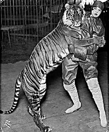

Siberian Tiger
Other names: Korean Tiger, Manchurian Tiger, etc.
Status: Endangered
Location: North Asia
Siberian Tigers are known for being the largest of the species. They can even take down bears. They also tend to live in colder climates which correlates with their paler fur.
Bengal Tiger

Other names: Royal Bengal Tiger or Indian Tiger
Status: Endangered
Location: India, Bangladesh and Nepal
Bengal Tigers are one of the famous species of tigers that everyone is familiar with. Some of them are born with a mutation causing white fur and blue eyes. Bengal tigers are also one of the oldest species meaning they've been around for about 12,000 years.
Indochinese Tiger
Image from WWF by Connie Lemperle/ WWF Greater Mekong.
Other name: Corbett's Tiger
Status: Near Critically Endangered
Location: Southeast Asia
This species is "critically endangered" and there are about 300-400 left. Unfortunately, the reason is because of illegal trade for things like medicine or jewelry. Its claws and bones are also used to make pastes. .
Malayan Tiger
Other names: Southern Indochinese Tiger
Status: Critically Endangered
Location: Southeast Asia
This species is very similar to the Indochinese species that it was not a separate species till the 2000s. Deforestation and killing are the main causes of it being critically endangered. There is a smaller population than the Indochinese tigers, resulting in its critically endangered state.
South China Tiger

Image from CGTN by VCG Photo.
Other names: Amoy Tiger, Xiamen Tiger, and Chinese Tiger
Status: Critically Endangered/Near Extinction
Location: Central/Eastern China
There is said to have been blue or white mutations of this species that had been spotted like the Bengal species.This species is also extremely endangered as there are 30-40 of them left in the world. The reason is extermination from the Chinese government in the late '90s.'
Sumatran Tiger
Other names: None
Status: Critically Endangered
Location: Indonesia
They mainly live on the Indonesian island of Sumatra and were separate from the other species for thousands of years. They are on the smaller side compared to the other species and have darker stripes that span their whole body. Also, they are the only living species in Indonesia.
Javan Tiger

Image from Wikipedia taken in 1938 at Ujung Kulon.
Other names: None
Status: Extinct (possibly?)
Location: Indonesia
Like the Sumatran and Bali Tigers, Javan Tigers inhabited Indonesia. Unfortunately, it went extinct in the 70s, so there are not a lot of information about it. However, there have been sightings of the species in the area over the last 10-15 years. There aren't confirmations if they are in hiding or if they have been wiped out.
Caspian Tiger

Image from Science Alert by the Berlin Zoo, c.1899.
Other names: Hyrcanian Tiger, Hyrcan Tiger, or Turan Tiger
Status: Extinct
Location: Central Asia and Middle east
They lived near the Caspian Sea, hence the "Caspian" name. Caspian Tigers have unfortunately been extinct for decades with none left in the wild or captivity. In their existence, they had huge skulls and huge bodies meaning they were powerful animals.
Bali Tiger
Image from Wikipedia by the Ringling Bros. c. 1915
Other names: None
Status: Extinct
Location: Indonesia
Like the Sumatran Tiger, it lived in Indonesia too. It has not been seen since the 1930's and was labeled extincted 20 years later. It was said to be the smallest species of all the tiger species in size.